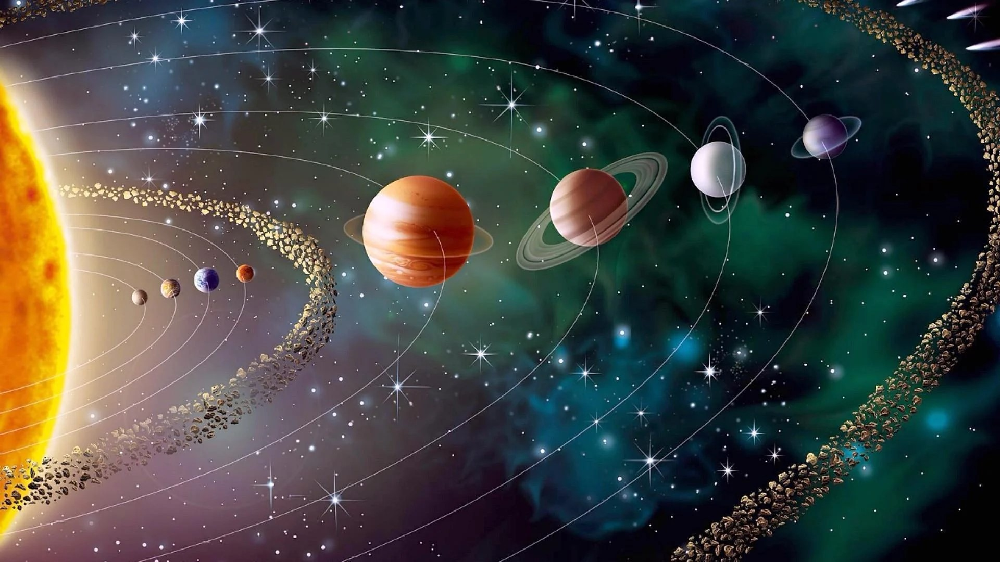

Your daily dose of cosmic exploration and planetary wonders.
Today's Topic: Exploring Our Solar System
The solar system is an amazing place, filled with planets, moons, and other celestial bodies orbiting our star, the Sun. Let’s take a journey to explore the wonders of our cosmic neighborhood!
The Sun is the heart of our solar system. It provides the light and heat necessary for life on Earth and keeps the planets in orbit through its gravitational pull.
Age: Approximately 4.6 billion years old.
Temperature: Around 5,500°C on the surface, much hotter in the core!
Fun Fact: The Sun makes up 99.86% of the mass in the solar system.
2. The Planets of the Solar System
There are eight major planets in our solar system, each unique in its characteristics. Let's look at them in order from the Sun:
Mercury : The smallest planet, closest to the Sun.
Venus : Earth's "twin" in size, but with a toxic atmosphere and extreme temperatures.
Earth : Our home planet, the only one known to support life.
Mars : The "Red Planet" with the largest volcano in the solar system, Olympus Mons.
Jupiter : The giant of the solar system, with more than 75 moons!
Saturn : Famous for its stunning ring system.
Uranus : The "sideways" planet, rotating on its side with a pale blue hue.
Neptune : The furthest planet from the Sun, with powerful winds and a deep blue color.
3. Moons and Other Celestial Bodies
Besides planets, the solar system is home to a variety of other fascinating objects:
The Moon (Earth's Moon):
Our natural satellite, which influences the tides and has been visited by humans during the Apollo missions.
Asteroids:
Rocky bodies, mainly found in the asteroid belt between Mars and Jupiter.
Comets:
Cosmic snowballs of frozen gases, rock, and dust. Famous examples include Halley's Comet.
Dwarf Planets:
Pluto is the most famous, but there are others like Eris and Haumea.
4. Images of the Solar System
A stunning view of the solar system showcasing the Sun and its orbiting planets.

Image Details
This image highlights the relative positions of the planets in the solar system.
4. Video of the Solar System
A stunning video of the solar system showcasing the Sun and its orbiting planets.Video Information
This video provides a breathtaking view of the solar system, focusing on its planets and their movements.